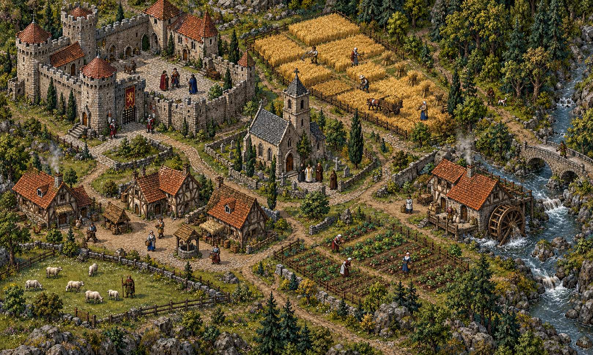

UMA VIAGEM À IDADE MÉDIA
Crônicas do feudalismo
Quem vivia aqui? Quem trabalhava a terra?
Explore o mapa e descubra como essa sociedade funcionava.
0 de 8 lugares explorados
Uma descoberta a cada clique.
EUROPA OCIDENTAL · SÉCULOS XI–XIII

CAPÍTULO II · TERRA, TRABALHO E PODER
GreensleevesArranjo em 8 bits
QUEM VIVE AQUI?
✦ Explore no seu ritmo. Toque nos números para descobrir cada lugar.